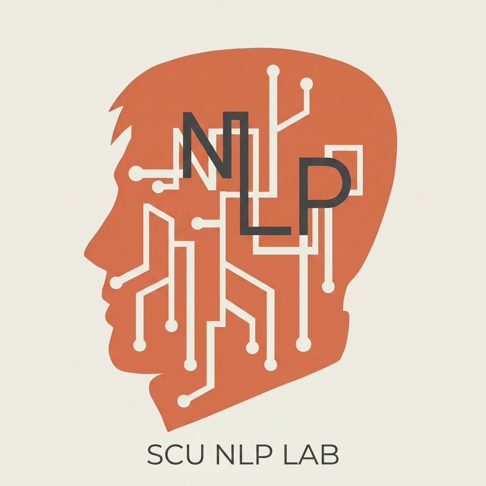

2026/11/07（六）13:30–16:30 ｜ 城中校區 5216 菁英講堂
東吳大學資料科學系 吳政隆

📘 教材網站
jlwustudio.github.io/
chat2agent_workshop_2026
🤖 claude.ai 網頁版
瀏覽器打開、登入你的免費帳號
已裝桌面版也可以，功能一樣、帳號同步
今天你動手的部分全部用免費版。
「幫我寫週報」→ 複製貼上背景 → 「格式不對」→ 再貼一次 → 「數字錯了」→ ……
每週重來一次
「幫我寫這週週報」→ 它知道公司背景、照固定格式、讀完 30 份紀錄、自己查核數字 → 交 Word 檔給你驗收
設定一次，之後一句話
今天要從左邊走到右邊。
🙋
每週用 AI
超過 3 次？
💻
會寫一點
程式？
💳
有付費訂閱
任何 AI？
（可換成線上投票 QR）
對話：你問、它答
大部分人在這給它資料與規則：Project、Skill、產出檔案
你動手・免費交辦任務：深度研究、排程
老師示範・Pro打造 Agent 團隊：Claude Code、Subagents
老師示範・Pro花多久
對不對、完不完整
能不能直接拿去用
四個回合：A 模型品質 ・ B 研究 ・ C 大量檔案 ・ D 排程
| Claude | ChatGPT | Gemini | |
|---|---|---|---|
| 免費版有的 | Project、Skill、Artifact、產出檔案 | Project、Skill | Gem、Canvas、NotebookLM |
| 放在付費的 | Opus、Research、排程、Claude Code | 完整深度研究、排程、強模型 | Pro 模型、長文件、更多研究額度 |
| 最便宜付費 | US$20／月 | Go 方案（價格依地區） | AI Plus NT$165／月 |
資料來源：三家官方方案頁，2026/11/06 讀取。今天全程用 Claude，學到的觀念換一家也適用。
13:45–14:10
「禾川精密 Q3 客訴增加了 ___」
它不是去資料庫查答案，是猜最可能的下一個字。
所以今天的重點都是：怎麼把資料和規則交給它。
| 要素 | 要回答的問題 | |
|---|---|---|
| 任務 | 必填 | 做什麼？做到什麼程度？ |
| 資料 | 必填 | 根據什麼？沒給資料，它只能猜 |
| 格式 | 必填 | 交出來長什麼樣？段落、表格、字數、檔案 |
| 角色 | 建議 | 用誰的身分、寫給誰看？ |
| 規則 | 建議 | 限制、不能做的事、判斷標準 |
| 範例 | 選填 | 給一小段「我要的樣子」 |
寫一次存起來 → Project 指示、Skill。交辦給 Agent → 再加「完成標準」和「驗收方式」。
任務 1：一頁提案——湖口廠、觀音廠要不要導入「AI 智慧排程」
任務 2：回覆大客戶的品質客訴信
📎 上傳 company_profile.md、complaint_email.txt
📋 提示詞在講義「回合 A」
🤖 模型選 Sonnet
⏱ 8 分鐘。做完先自己看：它有沒有注意到資料裡所有的限制條件？
文筆通順、格式整齊
（現場投影結果）
把多個條件放在一起想
（現場投影結果）
| 檢查點 | 看什麼 |
|---|---|
| 限制條件 | 11 月底前不能停線換系統、資訊處 1 人 12 月請假 → 最快明年 1 月 |
| 預算 | 380 萬有沒有放進 600 萬上限一起算 |
| 客訴 | 焊點不良和交期都有回？有 8D 日期？沒亂承諾賠償？ |
14:10–15:00 ｜ L2 ｜ 全部免費
📁 Project ＝
之後在裡面開的每個對話
都自動帶著這些 → 一句話就能開工
【角色】你是禾川精密總部的營運分析助理，讀者是總經理和各廠廠長。
【任務】我會給你廠區週會紀錄，請整理成週報。
【格式】一、本週重點（3 點）二、問題分類表 三、需要主管決定的事 四、待確認事項
【規則】每個數字都要能對回原始資料；資料矛盾時列出兩邊，不要自己挑
【範例】「湖口廠 PSU-650 本週 8 張訂單延遲，3 份紀錄都指向插單，建議優先處理。」完整版在講義實作①，直接複製。
company_profile.md 到 Project 檔案👀 你只講了一句話，它卻知道背景、照你的格式。這就是 L2。
做法＝Project 指示＋你的修正，下一步把它打包成 Skill。
Project 的限制
只在那個 Project 裡有效
Skill
SKILL.md 做法說明書---
name: ops-report
description: 把週會紀錄、員工與客戶回饋整理成禾川精密格式的週報或月報（Word 檔）。
當使用者說「寫週報」「寫月報」時使用。
---
# 產出步驟
1. 先讀完所有資料，不要只讀前幾份
2. 分類：交期、品質、人力、設備、安全與永續
3. 數字有衝突時不要自己挑，列在「待確認事項」
# 報告結構 ……
# 寫作規則 ……不用自己寫：請 Claude 把「Project 指示＋你的修正」整理成編號步驟。提示詞要點名六個步驟，不能只說「打包剛才的做法」。
ops-report.zip → Customize → Skills → ＋ → Create skill → Upload a skill✅ 它會說正在使用 ops-report，最後給你一個 Word 檔。做不出 zip？講義有現成的可以下載。
| 比喻 | 什麼時候用 | 今天 | |
|---|---|---|---|
| Project | 給新同事的資料夾 | 同一類工作反覆做，背景都一樣 | 你做了 |
| Skill | 公司 SOP 手冊 | 固定格式／流程；想到處用、分享 | 你做了 |
| Subagent | 把工作拆給一個小組 | 量大可拆開，或「一個寫、一個審」 | 等一下看 |
🪪 個資
客戶姓名、電話、身分證、病歷 → 先去識別化
🔒 機密
未公開財報、合約、報價、原始碼 → 看公司規定
💥 外流會怎樣？
答案是「會出事」→ 不要放進免費版
企業通常用有資料保護條款的 Team／Enterprise 方案。
15:10 回來看 Agent
15:10–16:10 ｜ L3–L4
你的角色從「操作員」變成「主管」。
請調查台灣電子製造業 2026 年的主要趨勢（AI 與智慧製造、碳費與範疇三、缺工與移工、供應鏈移往東南亞），
每個趨勢附 2 個可查證的來源連結，最後給禾川精密 3 個具體建議。在 Project 外面開新對話。搜尋幾次，挑前幾筆結果整理成回答
先擬研究計畫 → 多輪搜尋 → 讀完來源 → 交叉比對 → 附引用的報告
做完先填講義的比較表左欄，等一下一起填右欄。
| 檢查項目 | 🟢 一般搜尋 | 🟠 Research |
|---|---|---|
| 1. 不同網站的來源有幾個 | ＿＿ | ＿＿ |
| 2. 點開 2 個，真的支持它的說法？ | ＿／2 | ＿／2 |
| 3. 四個趨勢都有寫到？ | ＿／4 | ＿／4 |
| 4. 數字有年份和出處？ | ||
| 5. 有指出資料不足或說法不一？ | ||
| 6. 建議換成別家公司還成立？（成立＝空泛） | ＿／3 | ＿／3 |
| 7. 花多久 | ＿ 分 | ＿ 分 |
只是查一下 → 一般搜尋就夠。寫給主管、拿來決策 → 第 2、4、5 項的差距就是付費換到的。第 2 項永遠要自己做。
「請改寫成給總經理看的一頁摘要，並對照我們 Q3 的數字，指出哪些趨勢和我們最相關。」
👀 你已經在自己串 Agent 流程了——只是現在還要你手動傳遞。
挑 5 份上傳：「用 ops-report Skill 整理成 10 月月報，另外做 Excel 統計。」
想想看：30 份全丟進去會怎樣？
Claude Code 直接讀電腦裡整個資料夾，載入你剛才做的同一份 Skill
.claude/skills/ops-report/SKILL.md ← 你做的那份 Skill
.claude/agents/file-summarizer.md ← 整理員：只抽取，不下結論
.claude/agents/reviewer.md ← 審稿員：假設報告一定有錯ops-report Skill💡 審稿分身的價值：AI 查 AI。你仍然要驗收，但它先幫你抓了一輪。
排程把「做」自動化，「把關」還是你的工作。
換哪一家 AI、哪一種 Agent 都適用。講義有可複製版本。
2–3 位，每人 30 秒
你做了什麼助理／Skill ・ 它幫你省了什麼 ・ 你抓到它哪裡做錯
對話
✓Project ＋ 你自己的 Skill
✓ 帶回家深度研究、排程
看過了Claude Code ＋ Subagents
看過了每週重複、有固定格式、最花時間的事是 ______
我會用：Project／Skill／深度研究／排程／Claude Code
我會怎麼驗收 ______
講義最後面有，填好拍照帶走。
16:20–16:30 ｜ 東吳資科碩士班／在職專班
| 今天碰到的問題 | 碩士班在學什麼 |
|---|---|
| 它說的數字對嗎？分類準嗎？ | 模型評估：測試資料、準確率、系統性錯誤 |
| 30 份可以，30 萬份呢？ | 資料工程：清理、資料庫、批次流程 |
| 它不知道我們公司的事 | RAG 與知識庫：依公司文件回答並附出處 |
| 通用模型不懂我的產業 | NLP 與模型微調：訓練領域模型 |
| Agent 會不會亂做事？ | AI 系統設計與治理：權限、查核、可解釋性 |
報名 115/12/08 – 116/01/04
面試 116/02/21（日）・ 名額 48
工作經驗滿 2 年 ・ 資料審查＋面試
資料科學 × AI 工具 × 產業決策應用 ・ 非資訊背景也適合
甄試 12 名（報名已於 10/27 截止）
其他管道見招生資訊網
人工智慧 ・ 智慧運算 ・ 智慧決策 ・ 雙聯學位
NVIDIA AI 證照培訓課程
今天這種「拿工作上的問題來做」的學法，就是在職專班的上課方式。
📋 資科系招生頁
簡章以東吳大學招生資訊網為準
📞 聯絡窗口
資料科學系 邱小姐
(02)2881-9471 #5937
cchiu@scu.edu.tw
（回饋問卷 QR）
今天：從聊天走到交辦。
回去：把一件重複的工作交出去。